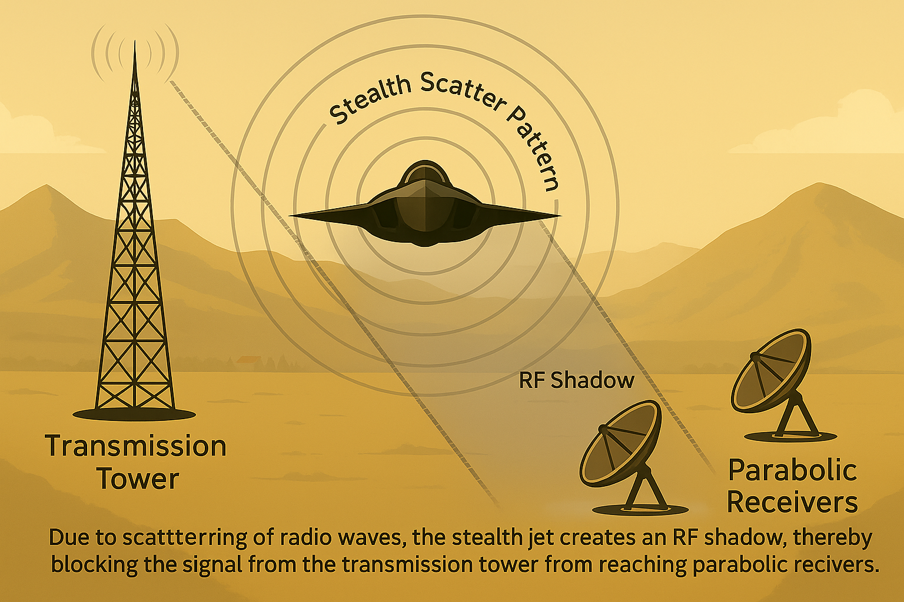

This diagram illustrates the RF shadow formed when a stealth aircraft obstructs a radio signal path between a transmitter and receiver. Traditional radar struggles to detect stealth aircraft due to minimized reflections. However, the shadowed region formed behind the aircraft relative to the transmitter can be observed using passive radar techniques — particularly by analyzing disruptions in analog broadcast signals.
Developed by BR Engineering | View Résumé (PDF)